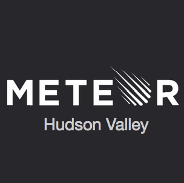

Created by Nitya Narasimhan / @nitya

September 2014
$ curl https://install.meteor.com | /bin/sh
$ meteor create meteorHV
meteorHV: created.
To run your new app:
cd meteorHV
meteor
$ cd meteorHV
$ meteor
=> Started proxy.
=> Started MongoDB.
=> Started your app.
=> App running at: http://localhost:3000/
$ meteor deploy meteorHV.meteor.com
Deploying to meteorhv.meteor.com. Bundling...
Uploading...
Now serving at meteorhv.meteor.com
$ meteor deploy --delete meteorHV.meteor.com
Deleted.
$ ls -al
.meteor
meteorHV.css // stylesheet
meteorHV.html // view (document)
meteorJV.js // controller (event handlers, model helpers, processing)
$ ls -al .meteor
.finished-upgraders // helps meteor upgrade your app on 'meteor update'
.gitignore // default settings for Git check-ins
.id // unique token auto-generated for project
local // host local db (Mongo) if central DB undefined (no MONGO_URL)
packages // Meteor packages (non-core) used by app (with 'meteor add')
release // version of Meteor used by this app
versions // versions of core Meteor packages installed for app
// Empty File
if (Meteor.isClient) {
// counter starts at 0
Session.setDefault("counter", 0);
Template.hello.helpers({
counter: function () {
return Session.get("counter");
}
});
Template.hello.events({
'click button': function () {
// increment the counter when button is clicked
Session.set("counter", Session.get("counter") + 1);
}
});
}
if (Meteor.isServer) {
Meteor.startup(function () {
// code to run on server at startup
});
}
$meteor create --example leaderboard
leaderboard created.
$meteor create --example todos
todos created.
$meteor create --example wordplay
wordplay created.
$meteor create --example parties
parties created.
$cd leaderboard
$meteor --port 3567
[[[[[ ~/Development/Meteor/leaderboard ]]]]]
=> Started proxy.
=> Started MongoDB.
=> Started your app.
=> App running at: http://localhost:3567/
body {
font-family: 'Helvetica Neue', Helvetica, Arial, sans-serif;
font-weight: 200;
margin: 50px 0;
padding: 0;
-webkit-user-select: none;
-khtml-user-select: none;
-moz-user-select: none;
-o-user-select: none;
user-select: none;
}
#outer {
width: 600px;
margin: 0 auto;
}
.player {
cursor: pointer;
padding: 5px;
}
.player .name {
display: inline-block;
width: 300px;
font-size: 1.75em;
}
.player .score {
display: inline-block;
width: 100px;
text-align: right;
font-size: 2em;
font-weight: bold;
color: #777;
}
.player.selected {
background-color: yellow;
}
.player.selected .score {
color: black;
}
.details, .none {
font-weight: bold;
font-size: 2em;
border-style: dashed none none none;
border-color: #ccc;
border-width: 4px;
margin: 50px 10px;
padding: 10px 0px;
}
.none {
color: #777;
}
.inc {
cursor: pointer;
}
// Set up a collection to contain player information. On the server,
// it is backed by a MongoDB collection named "players".
Players = new Mongo.Collection("players");
if (Meteor.isClient) {
Template.leaderboard.players = function () {
return Players.find({}, {sort: {score: -1, name: 1}});
};
Template.leaderboard.selected_name = function () {
var player = Players.findOne(Session.get("selected_player"));
return player && player.name;
};
Template.player.selected = function () {
return Session.equals("selected_player", this._id) ? "selected" : '';
};
Template.leaderboard.events({
'click input.inc': function () {
Players.update(Session.get("selected_player"), {$inc: {score: 5}});
}
});
Template.player.events({
'click': function () {
Session.set("selected_player", this._id);
}
});
}
// On server startup, create some players if the database is empty.
if (Meteor.isServer) {
Meteor.startup(function () {
if (Players.find().count() === 0) {
var names = ["Ada Lovelace",
"Grace Hopper",
"Marie Curie",
"Carl Friedrich Gauss",
"Nikola Tesla",
"Claude Shannon"];
for (var i = 0; i < names.length; i++)
Players.insert({name: names[i], score: Math.floor(Random.fraction()*10)*5});
}
});
}